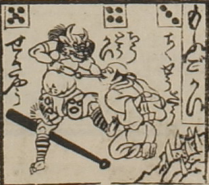

額に2本の角を生やした鬼。上顎から牙が覗いている。獣の皮でできた腰巻と脚絆を身につけている。金棒を後ろに置き、右手に持ったやっとこで、前に座った男性の舌を伸ばし、抜こうとしている。コマの題に「もふごかい」とある。
出典：親書誌：U426_nichibunken_0083：無量壽國浄土隻六；ムリョウジュコクジョウドスゴロク／日付：2007／資源識別子：U426_nichibunken_0083_0001_0000
Copyright (c)2010- International Research Center for Japanese Studies, Kyoto, Japan. All rights reserved.